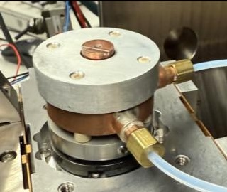
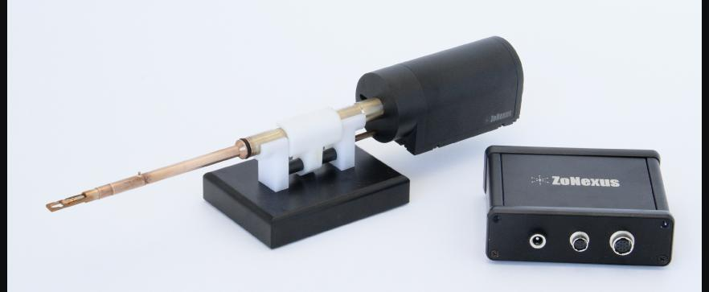
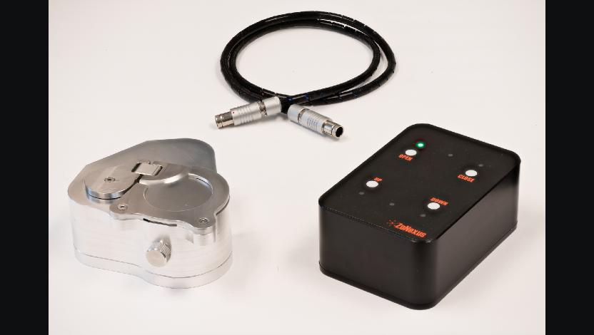
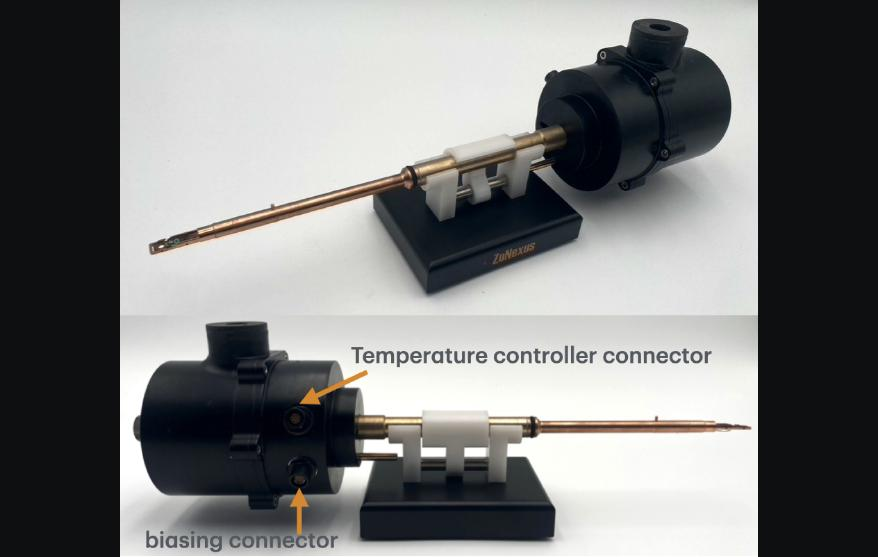
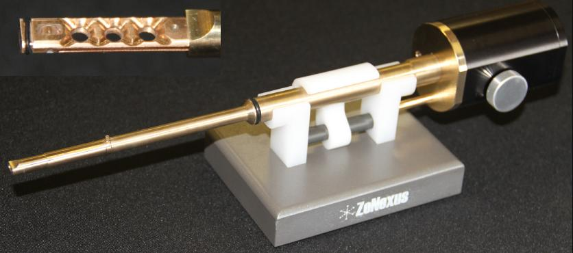

At ZoNexus LLC — a small Berkeley-based startup developing advanced instrumentation for electron microscopy — I owned end-to-end mechanical development of multiple product lines simultaneously, working in a fast-paced environment from concept design through CNC-machined prototypes, system integration, and production-ready builds.
My work spanned vacuum-compatible mechanical design, electromechanical integration, thermal simulation, DFM-driven manufacturing, and close collaboration with our machining team and external suppliers. I also contributed to adapting ZoNexus's product line for a new microscope manufacturer, developing custom holder configurations to meet new platform interface requirements. Below are the key instruments I contributed to during my time at ZoNexus.

Designed and built a vacuum-compatible, water-cooled Peltier thermoelectric cooling module for temperature-controlled instrumentation inside an SEM chamber — enabling in-situ experiments on battery materials, thin films, and other temperature-sensitive specimens in high vacuum.

ZoNexus's TEM holder with a built-in motor enabling continuous 360° specimen rotation — producing higher-resolution tomograms than conventional tilt-series methods with significantly faster acquisition.

Contributed to the design and development of air-free transfer modules for SEM and FIB systems — enabling loading of air-sensitive specimens in a glove box and transport to the SEM/FIB chamber without any air exposure, supporting battery materials and thin film research.

Designed a cryogenic TEM holder for imaging temperature-sensitive or beam-sensitive specimens at cryogenic temperatures, requiring careful thermal isolation, material and epoxy selection for cryogenic compatibility, and vacuum-tight assembly.

Developed a high-throughput TEM holder capable of holding multiple specimens simultaneously with double-tilt capability — significantly increasing analysis productivity by reducing sample exchange time and enabling batch characterization workflows.